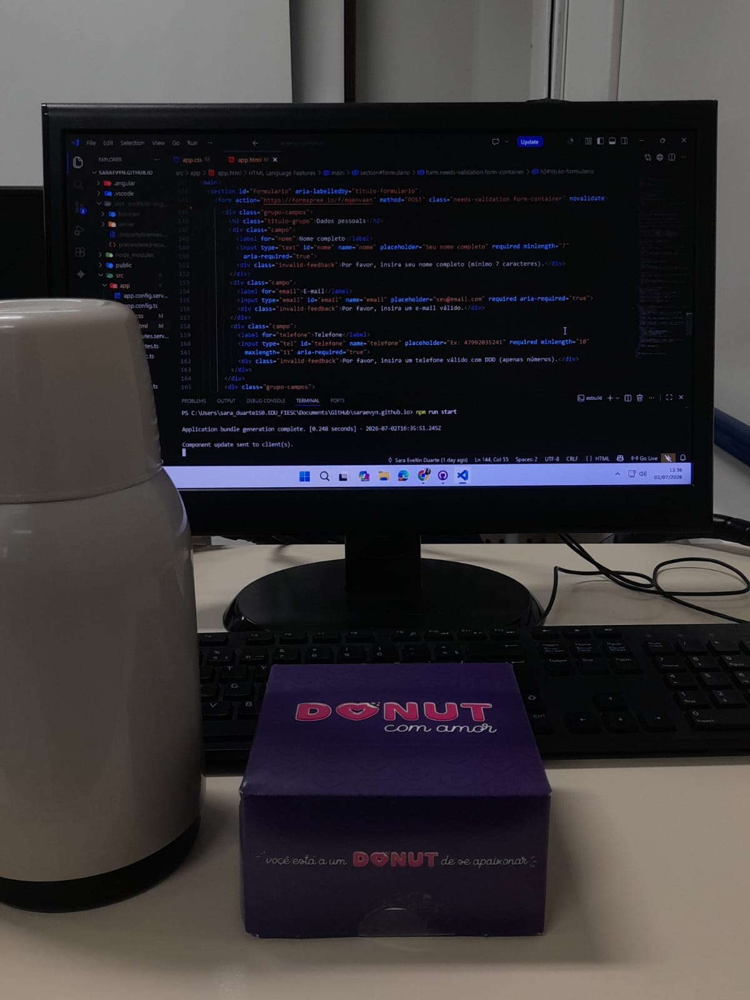
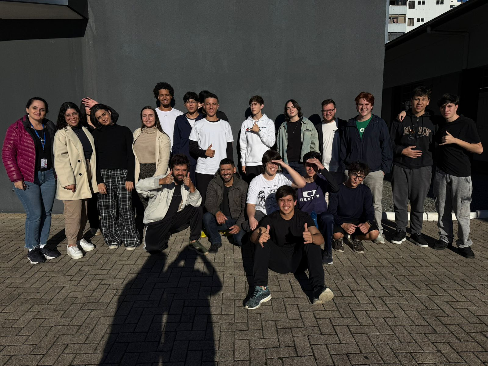

PS C:\Users\sara> dotnet new fullstack -n Portfolio
Desenvolvedora Full Stack em formação pelo Entra21 (Blusoft). Minha abordagem une a sensibilidade de interfaces centradas no usuário (**UI/UX**) com o rigor técnico de arquiteturas limpas e bem documentadas por **SDD** (Software Design Document).
A engenharia de software inteligente começa na modelagem e termina em uma experiência impecável.
Onde o ecossistema corporativo e o desenvolvimento ágil se conectam na prática.
Tecnologias e conceitos consolidados nos commits do meu repositório de evolução.
Desenvolvimento focado em POO, APIs RESTful estáveis, injeção de dependência, arrays e listas estruturadas.
Componentização modular, Data Binding, uso de Services injetáveis e estruturação de SPAs reativas.
Tipagem estática para segurança em runtime, manipulação assíncrona de dados (Async/Await) e DOM dinâmico.
Concepção visual orientada por Design Systems, wireframes de alta fidelidade e mapeamento de jornadas.
Modelagem de tabelas relacionais, commits semânticos e controle de ramificações do projeto.
O ecossistema prático do repositório my-journey-entra21 traduzido em código funcional.
A espinha dorsal do meu aprendizado no Blusoft. Centraliza laboratórios lógicos, algoritmos matemáticos, manipulação de estruturas e testes estruturais que validam meu raciocínio como dev Full Stack.
Projetos e desafios focados na manipulação dinâmica do DOM, consumo de APIs Rest e construção de interfaces implantadas diretamente em ambiente de produção utilizando GitHub Pages.
Documentações e diagramas que antecedem a codificação. Planejamento de fluxos de telas, mapeamento de tipos de dados para o banco e definição de escopo para garantir um software limpo e escalável.
Nenhum sistema operacional roda de forma isolada. A turma e os instrutores do Entra21 operam em paralelo, compartilhando conhecimento e decodificando bugs juntos.


O planejamento estratégico das minhas próximas atualizações de sistemas.
Ingresso em um time de tecnologia como dev Full Stack ou UI/UX, atuando diretamente em demandas e Squads ágeis.
Evoluir padrões de projeto de microsserviços com .NET Core, testes unitários (xUnit) e boas práticas de DDD.
Construir e gerenciar aplicações corporativas seguras, performáticas do design ao deploy na nuvem.
✓ Build finalizado com sucesso em 0s.
Esta é a minha v1.0-beta. Se o escopo do seu projeto precisa de uma desenvolvedora focada em qualidade, design e código limpo, vamos abrir uma issue ou conversar.